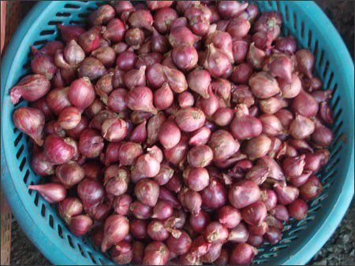
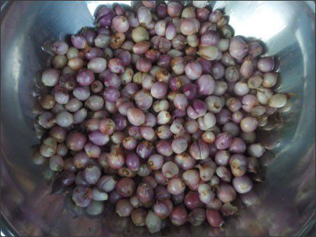
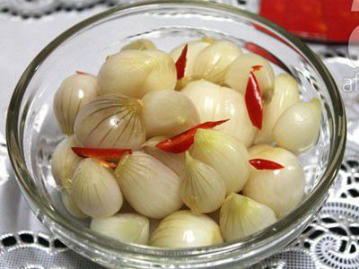

Dưa hành là món ăn không thể thiếu trong mỗi gia đình Việt vào dịp Tết cổ truyền. Tuy dân dã nhưng món dưa hành có thể giúp chúng ta đỡ ngán với những thực phẩm quá nhiều dinh dưỡng ngày Tết như bánh chưng, thịt… Một số bí quyết sau sẽ giúp bạn có được món dưa hành ngon, giòn đãi gia đình ngày Tết.
Chuẩn bị nguyên liệu:
Tùy số người trong gia đình mà bạn chọn lượng hành muối nhiều hay ít. Sau đây chúng tôi sẽ hướng dẫn bạn cách làm với tỷ lệ vừa cho khoảng 5 người trong gia đình.
 |
| Chọn hành tía hoặc hành trắng là ngon nhất, củ đều |
- 1 kg hành củ (Chọn hành tía là ngon nhất hoặc hành trắng, củ đều thì sẽ ngọt, giòn)
- Đường
- Muối
- Gừng
- Ớt
Thực hiện:
Bước 1: - Ngay sau khi mua hành về, bạn ngâm hành vào nước gạo trong khoảng vài tiếng đến vài ngày cho phai bớt vị hăng. Đây cũng là cách giúp bụi ra bớt, lớp vỏ bên ngoài tự bong, khi rửa đất bám gốc hành cũng ra bớt.
 |
| Bóc lớp vỏ bên khô bên ngoài, để lại gốc hành để tránh dưa hành bị nhũn, ủng. |
Bước 2: - Sau đó, vớt hành ra, bóc lớp vỏ khô bên ngoài, cắt bớt rễ, để lại gốc hành để tránh bị nhũn, ủng. Để hành khô ráo nước.
Bước 3: - Cho hành vào lọ thủy tinh cùng khoảng 200g muối, xóc đều và để trong khoảng 2-3 ngày. Chú ý: Thỉnh thoảng xóc đều lọ để hành ra bớt nước đen.
Bước 4: - Sau đó, đổ hành ra rổ, để ráo nước. Lúc này phần nước đen đã ráo hết, khi muối hành nước sẽ trong và thơm.
Bước 5: - Gừng rửa sạch, cạo vỏ, đập dập. Ớt bỏ hạt cắt lát.
Bước 6: Pha đường với nước ấm cùng chút muối rồi đổ vào lọ, nếm thử cho vừa độ mặn ngọt. Tiếp tục đổ hành và gừng, ớt vào đảo đều. Chú ý: Lượng nước phải ngập hành.
Đậy kín lọ, để trong khoảng 7-10 ngày là bạn đã có thể lấy hành ra nhâm nhi được.
 |
| Muối dưa hành ngon giòn ngày Tết |